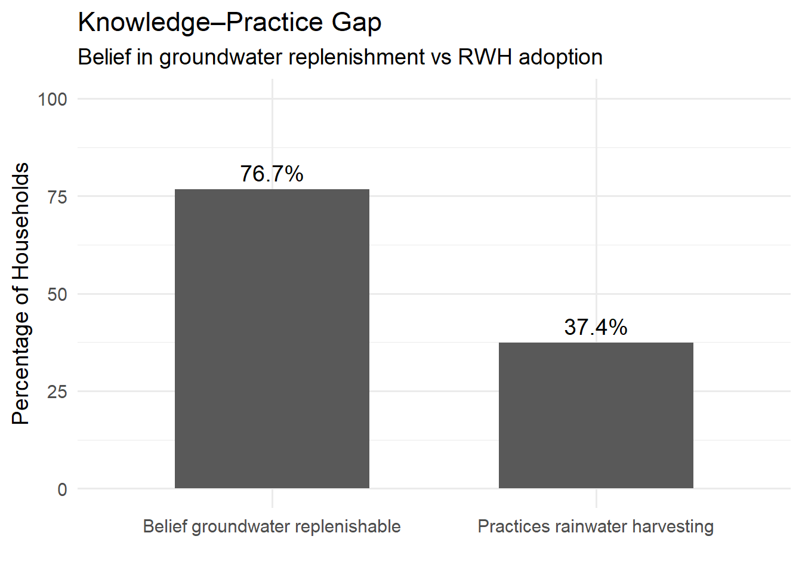

This dataset contains household-level survey data collected in 2025 under the BASEflow monitoring and data systems using the mWater digital data collection platform. The survey was conducted across selected communities to assess household water access conditions, perceptions of groundwater systems, and adoption of rainwater harvesting (RWH) practices.
The dataset captures both objective household characteristics (such as location and primary water source) and subjective perceptions and beliefs regarding groundwater recharge, water scarcity, and the effectiveness of rainwater harvesting. It also includes behavioural information on whether households practice rainwater harvesting and the barriers preventing adoption.
The data is structured at the household level and is suitable for both quantitative analysis and policy-relevant interpretation.
Key Themes
Captured Household water sources and dependency patterns
Seasonal water scarcity experiences
Community perceptions of groundwater systems
Misconceptions and knowledge gaps about groundwater recharge
Adoption and non-adoption of rainwater harvesting practices
Barriers to rainwater harvesting implementation
Perceived solutions and support needs for groundwater recharge
Potential Use Cases
Water Resource Planning and Policy
Behaviour Change and Community Education
NGO and Development Programming
Climate Change Adaptation Research
Integration with Hydrogeological Data Systems
Installation
You can install the development version of rainwaterhsurvey from GitHub with:
# install.packages("devtools")
devtools::install_github("openwashdata/rainwaterhsurvey")
## Run the following code in console if you don't have the packages
## install.packages(c("dplyr", "knitr", "readr", "stringr", "gt", "kableExtra"))
library(dplyr)
library(knitr)
library(readr)
library(stringr)
library(gt)
library(kableExtra)Alternatively, you can download the individual datasets as a CSV or XLSX file from the table below.
- Click Download CSV. A window opens that displays the CSV in your browser.
- Right-click anywhere inside the window and select “Save Page As…”.
- Save the file in a folder of your choice.
| dataset | CSV | XLSX |
|---|---|---|
| rainwaterharvesting | Download CSV | Download XLSX |
Data
The package provides access to household-level survey data collected in 2025 under the BASEflow monitoring and data systems using the mWater digital data collection platform. The survey was conducted across selected communities to assess household water access conditions, perceptions of groundwater systems, and adoption of rainwater harvesting (RWH) practices.
metadata
The dataset rainwaterhsurvey has 479 observations and 18 variables
rainwaterhsurvey |>
head(3) |>
gt::gt() |>
gt::as_raw_html()| district | community | primary_water_source | water_scarcity | scarcity_months | perceived_water_source | belief_underground_rivers | belief_groundwater_exhausted | belief_groundwater_replenished | belief_recharge_detectable | rwh_practice | rwh_barrier | rwh_use | belief_rwh_recharge | belief_rwh_expensive | belief_rwh_unreliable | recharge_solutions | rwh_support_needed |
|---|---|---|---|---|---|---|---|---|---|---|---|---|---|---|---|---|---|
For an overview of the variable names, see the following table.
| variable_name | variable_type | description |
|---|---|---|
| NA | NA | NA |
| :————- | :————- | :———– |
Example
library(rainwaterhsurvey)
# 1. Knowledge–Practice Gap
# This single visualization shows whether Knowledge translates into action or
# There is a behavioural adoption gap
# Load required libraries
library(dplyr)
library(ggplot2)
# ---- Clean and standardize variables ----
data_clean <- rainwaterhsurvey %>%
mutate(
belief_groundwater_replenished = as.logical(belief_groundwater_replenished),
rwh_practice_binary = ifelse(tolower(rwh_practice) == "yes", TRUE,
ifelse(tolower(rwh_practice) == "no", FALSE, NA))
)
# ---- Remove NA values separately for each indicator ----
belief_valid <- data_clean %>%
filter(!is.na(belief_groundwater_replenished))
practice_valid <- data_clean %>%
filter(!is.na(rwh_practice_binary))
# ---- Calculate percentages (excluding NAs) ----
belief_percent <- mean(belief_valid$belief_groundwater_replenished) * 100
practice_percent <- mean(practice_valid$rwh_practice_binary) * 100
summary_df <- data.frame(
indicator = c("Belief groundwater replenishable",
"Practices rainwater harvesting"),
percentage = c(belief_percent, practice_percent)
)
# ---- Create side-by-side bar chart ----
ggplot(summary_df, aes(x = indicator, y = percentage)) +
geom_bar(stat = "identity", width = 0.6) +
geom_text(aes(label = paste0(round(percentage, 1), "%")),
vjust = -0.5,
size = 5) +
ylim(0, 100) +
labs(
title = "Knowledge–Practice Gap",
subtitle = "Belief in groundwater replenishment vs RWH adoption",
x = "",
y = "Percentage of Households"
) +
theme_minimal(base_size = 14)
License
Data are available as CC-BY.
Citation
Please cite this package using:
citation("rainwaterhsurvey")
#> To cite package 'rainwaterhsurvey' in publications use:
#>
#> Mhango E (2026). _rainwaterhsurvey: Rainwater Harvesting and
#> Groundwater Recharge Household Survey (BASEflow, 2025)_. R package
#> version 0.0.0.9000,
#> <https://github.com/openwashdata/rainwaterhsurvey>.
#>
#> A BibTeX entry for LaTeX users is
#>
#> @Manual{,
#> title = {rainwaterhsurvey: Rainwater Harvesting and Groundwater Recharge Household Survey (BASEflow, 2025)},
#> author = {Emmanuel Mhango},
#> year = {2026},
#> note = {R package version 0.0.0.9000},
#> url = {https://github.com/openwashdata/rainwaterhsurvey},
#> }